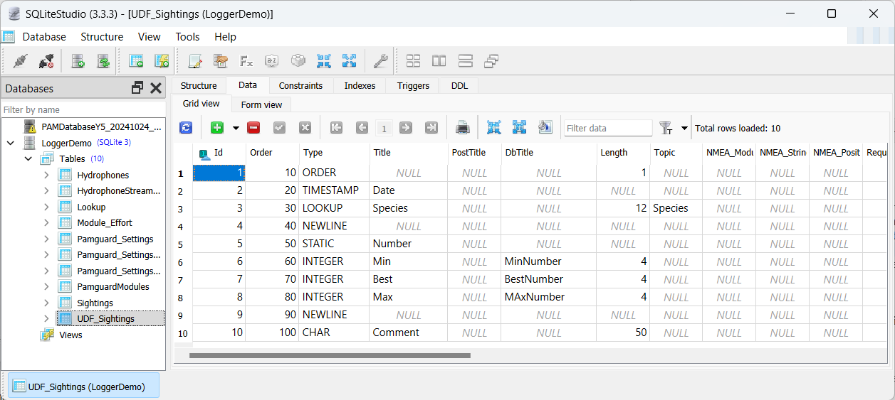

This is a temporary guide which explains the current state of Logger Forms module in PAMGuard and how to get it going.
The Logger forms implementation in PAMGuard uses an almost identical UDF_table system as the Logger2000 software. There are however a few small differences and old Logger UDF_ tables may not be fully compatible with PAMGuard.
The UDF_ tables define the contents of the individual forms which will appear in PAMGuard and the content of the output database table.
UDF tables all have the same fixed column format. The Logger forms module will read the contents of each UDF table when it starts up. For each UDF_ table, a new form will be created on the PAMGuard display. For each row in the UDF table a control (something you type into) will be generated on that form. A new database table to receive data from the form will also be created in the databsae and for each control on the form, a column will be created in the output database table.
For example, the table UDF_Effort will create a form called effort and an output table in the database also called "Effort", A row in the UDF_effort table with it's "Type" set to TIMESTAMP will generate a control on the form for entering dates and times and a column in the Effort table formatted to hold data/time data.
Here is an simple UDF_ table as an example.

Forms can be modified by editing the UDF tables with database software, or purely from menu driven commands with PAMGuard.
To add the Logger Forms module a database module must already be present. You should make sure you have one AND that it is connected to a database.
PAMGuard will need write access to the database and may need to modify the design of some of the tables in the database. Generally you can get away with having the database open with other programmes, however, it's best not to open the output tables, since these may need to be modified by PAMGaurd. If you have any difficulties, make sure the database is not open with any other programme.
To add the Logger Forms module select the File>Add Modules>Visual Methods>Logger Forms menu command and give it a name.
For each form you wish to add select the Detection>Logger Forms>Create New Form... menu command and give it a name. This will generate a new "UDF" tabel in the databse, which you must then fill in using other software (e.g. MS Access)